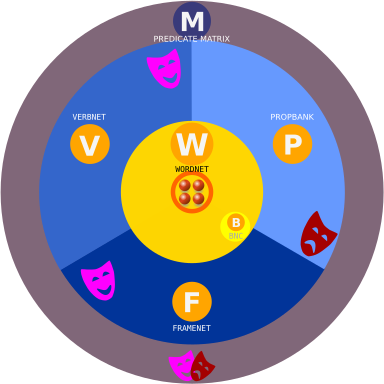

What is SqlUNet ?
SqlUNet stands for SQL Unified XNet where X subsumes WordNet, VerbNet, PropBank, FrameNet and Predicate Matrix.
While WordNet centers on senses and sense relations, VerbNet, PropBank, FrameNet focus on the semantic roles attached to them. PredicateMatrix tries to align semantic roles to be found in VerbNet, PropBank, FrameNet.
Instead of having separate independent databases, each in its own format, SqlUNet unifies them all into a single relational database, with a number of benefits:
- it makes it easy to maintain and use references across database boundaries
- this also eliminates the need of specific interfaces and APIs
- the SQL language becomes the common query language, with its full expressive power to build sophisticated queries
- surprisingly this is not at the expense of performance

WordNet
WordNet® is a large lexical database of English. Nouns, verbs, adjectives and adverbs are grouped into sets of cognitive synonyms (synsets), each expressing a distinct concept. Synsets are interlinked by means of conceptual-semantic and lexical relations. The resulting network of meaningfully related words and concepts can be navigated. WordNet captures a word's relations to other
words by building a tree graph. The relation types include: 'more specific', 'more generic', 'causes', 'entails', 'similar to', 'opposite of', 'part of', 'whole of', etc… [WordNet]
 VerbNet
VerbNetVerbNet® is the largest on-line verb lexicon currently available for English. It is a hierarchical domain-independent, broad-coverage verb lexicon. VerbNet is organized into verb classes. Each verb
class in VerbNet is completely described by thematic roles, selectional restrictions on the arguments, and frames consisting of a syntactic description and semantic predicates with a temporal function. Each VerbNet class contains a set of syntactic descriptions, or syntactic frames, depicting the possible surface realizations of the argument structure for constructions
such as transitive, intransitive, prepositional phrases, resultatives, and a large set of diathesis alternations. Semantic restrictions (such as animate, human, organization) are used to constrain the types of thematic roles allowed by the
arguments, and further restrictions may be imposed to indicate the syntactic nature of the constituent likely to be associated with the thematic role. Syntactic frames may also be constrained in terms of which prepositions are allowed. Each
frame is associated with explicit semantic information, expressed as a conjunction of boolean semantic predicates such as `motion', `contact' or `cause'. Each semantic predicate is associated with an event variable E that allows predicates to
specify when in the event the predicate is true (start(E) for preparatory stage, during(E) for the culmination stage, and end(E) for the consequent stage). [VerbNet]
 PropBank
PropBankPropBank® is a corpus that is annotated with verbal propositions and their arguments — a "proposition bank". The PropBank project has been
extremely influential in recent research in natural language processing. It led to wide popularity for the semantic role labelling task. [Wikipedia]
 FrameNet
FrameNetFrameNet® is based on a theory of meaning called Frame Semantics, deriving from the work of Charles J. Fillmore and colleagues. The basic idea is straightforward: that the meanings of most words can best be understood on
the basis of a semantic frame, a description of a type of event, relation, or entity and the participants in it. For example, the concept of cooking typically involves a person doing the cooking (Cook), the food that
is to be cooked (Food), something to hold the food while cooking (Container) and a source of heat (Heating_instrument). In the FrameNet project, this is represented as a frame called Apply_heat, and the Cook, Food, Heating_instrument and
Container are called frame elements (FEs) . Words that evoke this frame, such as fry, bake, boil, and broil, are called lexical units (LUs) of the Apply_heat frame. The
job of FrameNet is to define the frames and to annotate sentences to show how the FEs fit syntactically around the word that evokes the frame [FrameNet]. The FrameNet project has been influential in both linguistics and natural language
processing, where it led to the task of automatic Semantic Role Labeling.
PredicateMatrix
The Predicate Matrix® is a new lexical resource resulting from the integration of multiple sources of predicate information including FrameNet, VerbNet, PropBank, WordNet. This approach is meant to improve the
interoperability between the four semantic resources that incorporate predicate information. Predicate Matrix defines a set of automatic methods for mapping the semantic knowledge included in WordNet, VerbNet, PropBank and FrameNet. Predicate
Matrix uses advanced graph-based word sense disambiguation algorithms and corpus alignment methods to automatically establish the appropriate mappings among their lexical entries and roles. [Predicate Matrix]
Terminology
|
|
|
|
|---|---|---|---|
| VerbNet | PropBank | FrameNet | |
| set of roles | class | roleset * | frame |
| role | role | role/arg | frame element |
| instance | class member | predicate | lex unit |
* (attached to predicate)